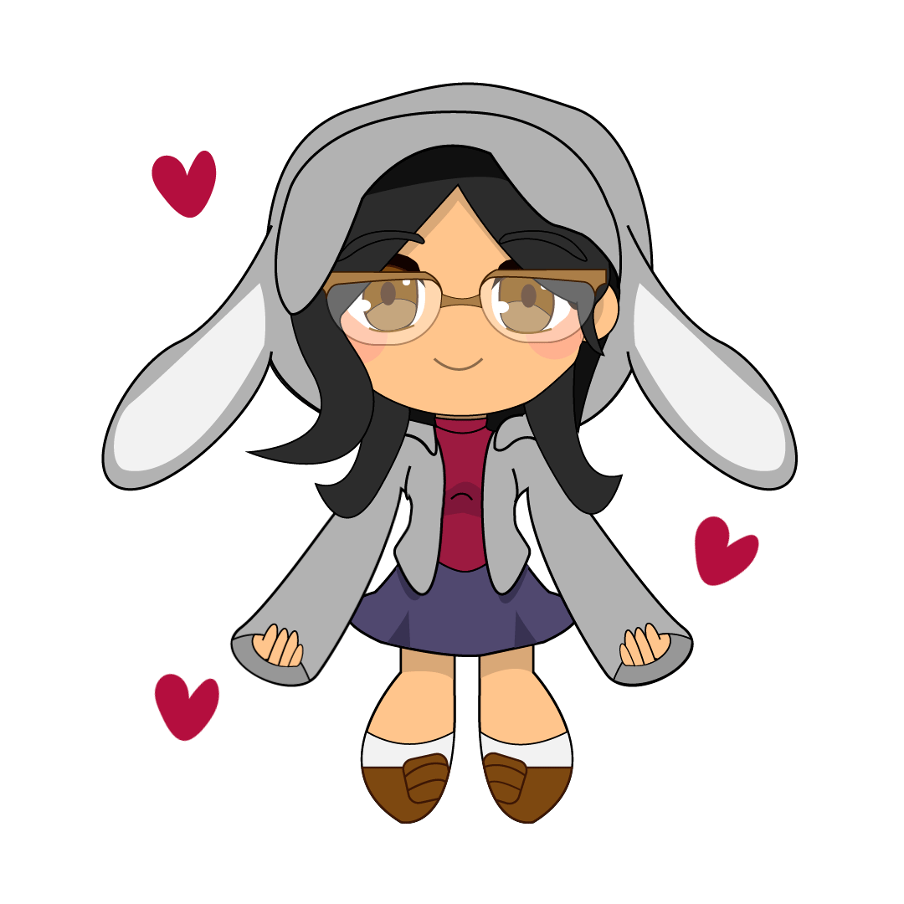

❀ About the website's creator ❀
Hiya! I'm Maloney! I'm a student in Computation Arts at Concordia University and this is my final project for my CART 211 class. I love design, illustrations and bunnies, so I decided to combine all three in one wholesome website! This was created using Visual Studio Code, Paint Tool Sai, Photoshop, and a lot of Google research. Inspired by cute animal games such as Nintendogs, Neko Atsume and Usagi Shima, CoffeeBun's goal is to make the user relax by visiting a virtual rabbit cafe. If you want to see my other works, you can visit my portfolio website here! If you want to see my answers to the reading questions, click here!
❀ Credits ❀
- Music Button
- Food Minigame
- Petting Minigame
- Bunny Bio Cards
- PNG Border Hover
- Custom Cursor
- Blurry Café Background
- Floor Texture
- Music Note Icon
- Mute Music Icon
- Home Icon
- Favicon Maker
- Website Font
- Logo Font
- Piano Soundtrack